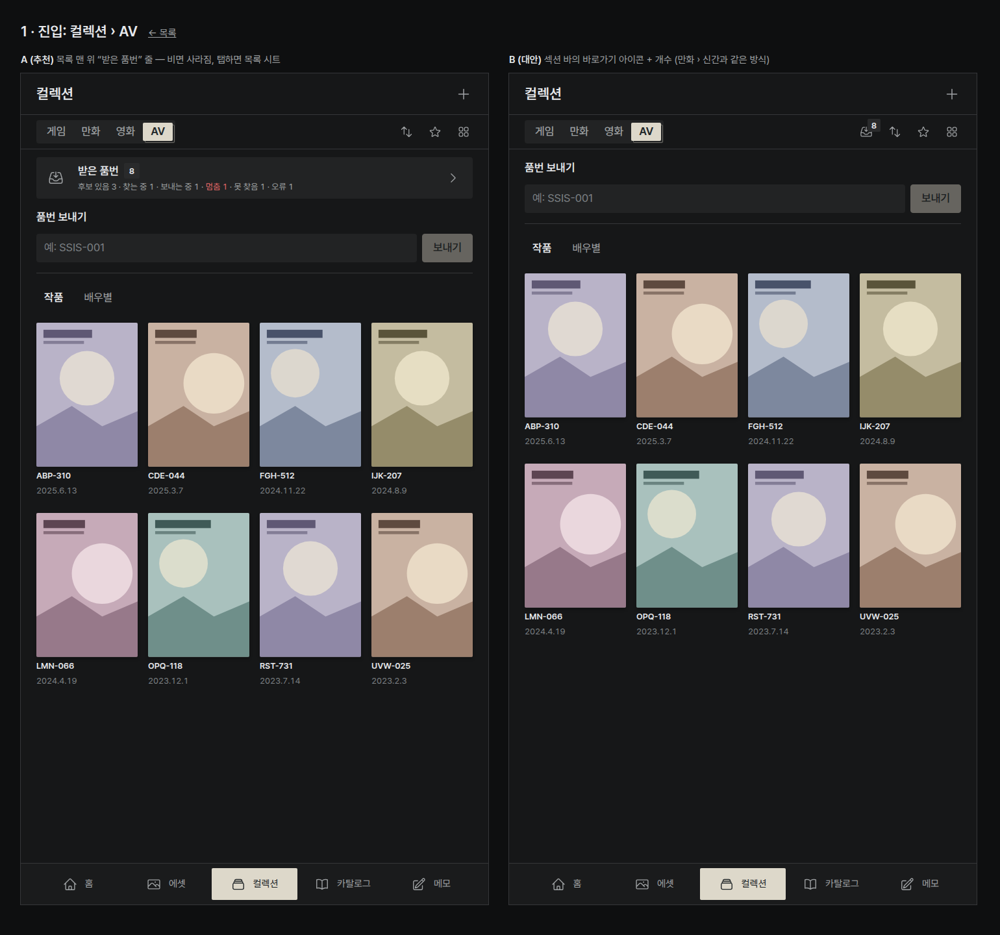
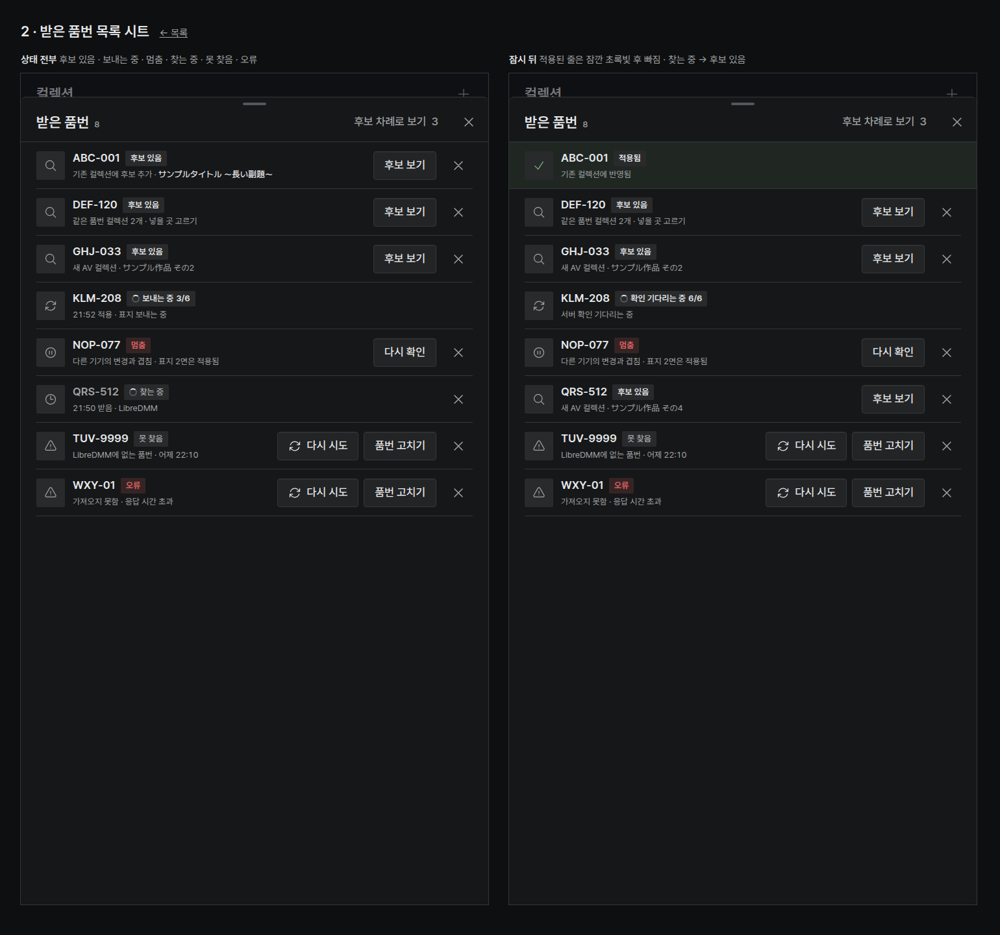
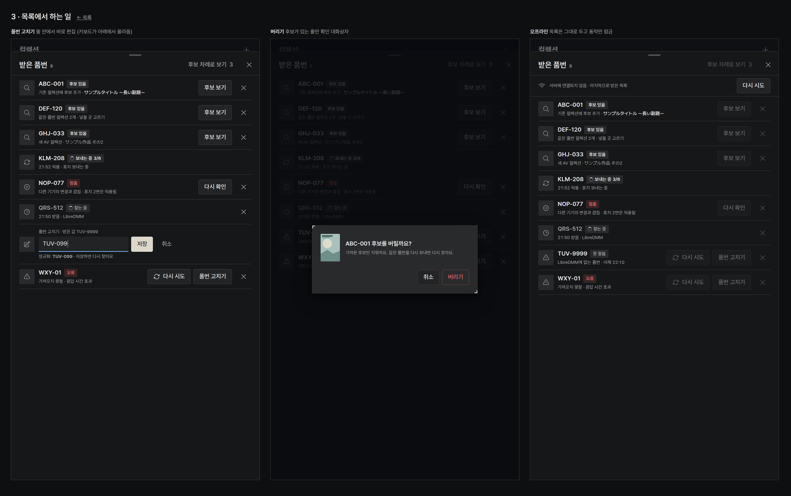
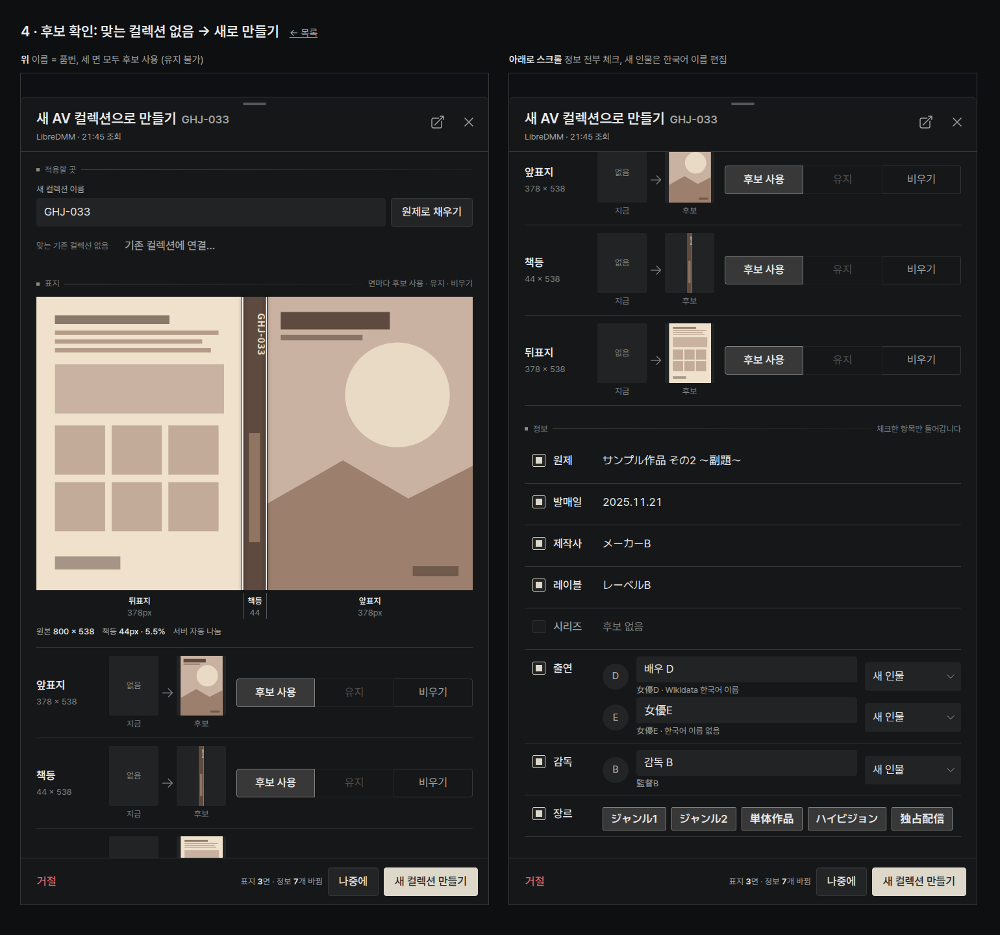
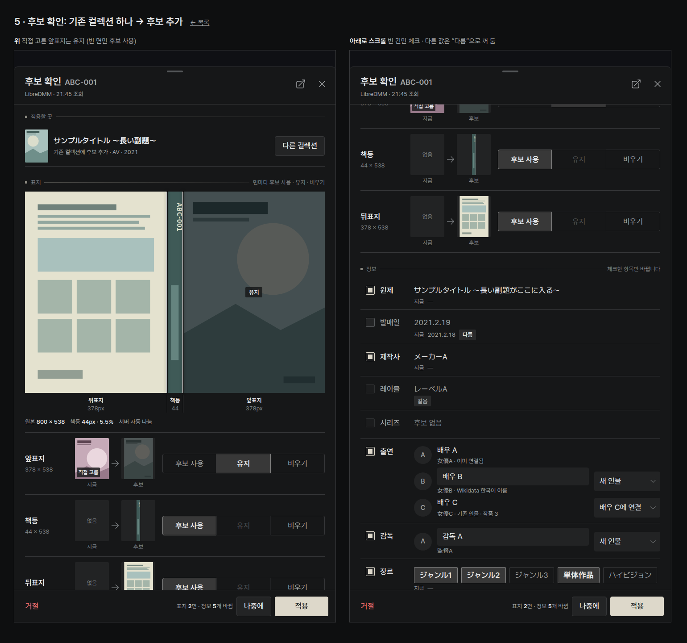
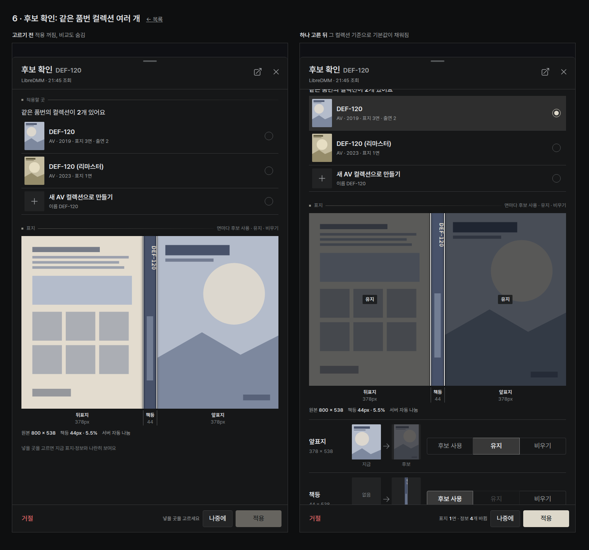

태블릿 AV 받은 품번 · 후보 확인 (목업, 2026-10-09)
PC의 받은 품번(AvLinkInbox)과 후보 확인 창(AvLinkChooserDialog)을 세로 태블릿으로 옮긴 안입니다. 규칙과 문구는 PC와 같고, 다른 점은 터치 크기(44), 세로 배치, 아래에서 올라오는 시트뿐입니다. 재킷은 서버 기본 나눔만 쓰며 선을 끌 수 없습니다. 모든 그림은 만들어 낸 도형이고 품번·제목·이름은 가짜입니다. 각 화면은 720 × 1280 프레임이며 ?frame=1처럼 한 장만 볼 수 있습니다.
화면

1 · 진입컬렉션 › AV 맨 위 “받은 품번 8” 줄(추천)과 섹션 바 바로가기(대안).
2 · 받은 품번 시트후보 있음 · 보내는 중 3/6 · 멈춤 · 찾는 중 · 못 찾음 · 오류, 그리고 적용이 끝난 줄이 잠깐 초록빛으로 남았다 빠지는 모습.
3 · 목록에서 하는 일품번 고치기(줄 안 편집), 버리기 확인, 오프라인일 때.
4 · 새 컬렉션으로 만들기맞는 컬렉션 없음: 이름 = 품번, 세 면 모두 후보 사용, 정보 전부 체크.
5 · 기존 컬렉션에 후보 추가직접 고른 앞표지는 유지, 빈 면만 후보 사용. 빈 정보만 체크, 다른 값은 “다름”으로 꺼 둠.
6 · 같은 품번 여러 개넣을 곳을 고르기 전에는 적용이 꺼져 있고, 고르면 그 컬렉션 기준으로 기본값이 채워짐.흐름
- 컬렉션 › AV 맨 위에 “받은 품번 8” 줄이 생깁니다. 아래 줄에 상태별 개수가 보이고, 멈춘 것은 빨간 글씨입니다. 받은 품번이 없으면 줄이 사라집니다. (지금의 “품번 보내기”는 그 아래에 그대로 둡니다.)
- 줄을 누르면 받은 품번 시트가 아래에서 올라옵니다 (신간·캘린더와 같은 시트, 위쪽 36px만 남김). 최신순 목록이고, 줄마다 품번 · 상태 배지 · 한 줄 설명 · 동작 버튼 · 버리기(✕)가 있습니다. 헤더의 “후보 차례로 보기 3”은 PC의 “찾은 것 차례로 보기”와 같습니다.
- 후보 보기를 누르면 후보 확인 시트가 목록 시트 위에 쌓입니다 (전체 높이, 위에서 아래로 한 줄 스크롤). 순서: 적용할 곳 → 표지(재킷과 세 면) → 정보(항목 비교) → 고정된 아래 버튼 줄(거절 · 바뀌는 개수 · 나중에 · 적용).
- 적용을 누르면 시트가 닫히고 그 줄이 “보내는 중 3/6”으로 바뀝니다 (만들기 → 표지 → 정보 → 출연 → 서버 확인). 다른 기기와 충돌하면 “멈춤”과 무엇까지 들어갔는지를 보여 주고, “다시 확인”을 누르면 고른 내용을 그대로 둔 채 최신 상태로 후보 창을 다시 엽니다. 끝나면 줄이 잠깐 초록빛으로 체크된 뒤 빠집니다 (성공 알림 없음).
정한 것 (사용자 결정 반영)
- 재킷 나눔: 서버 기본값만. 재킷 위에 흰 선 두 줄로 뒤표지 | 책등 | 앞표지를 표시하고, 바로 아래 눈금에 이름과 폭(px)을 적었습니다. 유지·비우기를 고른 면은 재킷 위에서도 어둡게 덮여 “유지”라고 보입니다.
- 면마다 선택: 앞표지 · 책등 · 뒤표지 한 줄씩, “지금 → 후보” 작은 그림과 후보 사용 / 유지 / 비우기. 쓰이지 않을 쪽 그림은 흐리게. 지금 표지가 없으면 유지는 비활성. 직접 고른 표지에는 “직접 고름” 표시가 붙고 기본값은 유지입니다.
- 적용할 곳: 맞는 컬렉션 하나 → “기존 컬렉션에 후보 추가”와 “다른 컬렉션”. 여러 개 → 라디오 목록 + “새 AV 컬렉션으로 만들기”, 고르기 전에는 적용 꺼짐. 없음 → 이름 칸(품번으로 채움) + “원제로 채우기”, “기존 컬렉션에 연결…”.
- 정보: 세로 폭에 맞춰 “후보 값” 아래에 “지금 값”을 작은 글씨로 두고 다름/같음 배지. 빈 칸만 기본 체크.
- 출연·감독: 한 사람당 한 줄. 새 인물은 한국어 표시 이름을 바로 고칠 수 있고 일본어 이름은 아래에 고정. 기존 인물은 “배우 C에 연결”, 이미 연결된 사람은 버튼 없음. 연결 방식 버튼은 아래 시트로 열립니다.
- 버리기: 후보가 있는 줄만 확인 대화상자(PC와 같음). 보내는 중·멈춤인 줄은 버릴 수 없습니다.
- 오프라인: 목록은 마지막 상태 그대로 두고(깜빡임 없음) 버튼만 잠급니다. 후보 적용은 서버가 있어야 합니다.
열린 질문
- 진입 위치: A 목록 맨 위 줄(추천, PC와 같은 자리이고 상태 개수가 보임) / B 섹션 바 바로가기 아이콘(만화 › 신간과 같은 방식, 목록을 밀어내지 않음).
- 말 맞추기: 태블릿은 찾는 중 / 후보 있음 / 보내는 중을 쓰고, PC는 조회 중 / 찾음 / 적용 중입니다. “한 뜻에 한 말” 규칙상 하나로 맞춰야 합니다 — 태블릿 쪽 말로 PC도 바꿀까요? 또 PC 코드는 “뒷표지”인데 맞춤법은 “뒤표지”라 이 목업은 뒤표지로 썼습니다.
- 품번 보내기 위치: 지금처럼 AV 목록에 둘지, 받은 품번 시트 맨 위로 옮겨 “보내기 → 받음 → 적용”을 한곳에 모을지. 보낸 뒤 안내 문구(“PC에서 작품을 고르면…”)는 태블릿에서도 고를 수 있게 되므로 바뀌어야 합니다.
- 줄 왼쪽 그림: PC처럼 상태 아이콘(목업)으로 둘지, 후보가 있는 줄은 앞표지 작은 그림으로 보여 줄지(알아보기 쉬움, 대신 PC와 달라짐).
- “후보 차례로 보기”: 적용하거나 나중에를 누르면 다음 후보로 바로 넘어갈지, 목록으로 돌아올지.
- 시트 모서리: DESIGN.md는 태블릿 시트 8px인데 현재 앱의 시트(overlay.css)는 14px입니다. 목업은 8px로 그렸습니다.
- 책등 경고: 서버 기본 나눔은 책등이 1–12%가 아니면 책등을 내놓지 않습니다. 선을 못 움직이는 태블릿에서는 그 경우 책등 줄을 “후보 없음”으로만 보여 주면 될까요?
확인한 범위
헤드리스 Chrome으로 여섯 화면을 1:1로 찍어 겹침과 잘림을 확인했습니다(각 화면의 PNG). 실제 태블릿이나 앱 코드에서 확인한 것은 아닙니다.